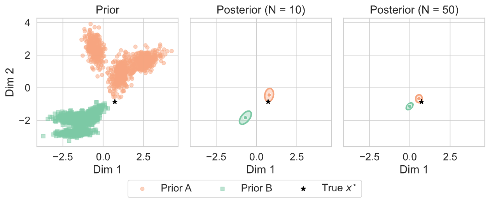
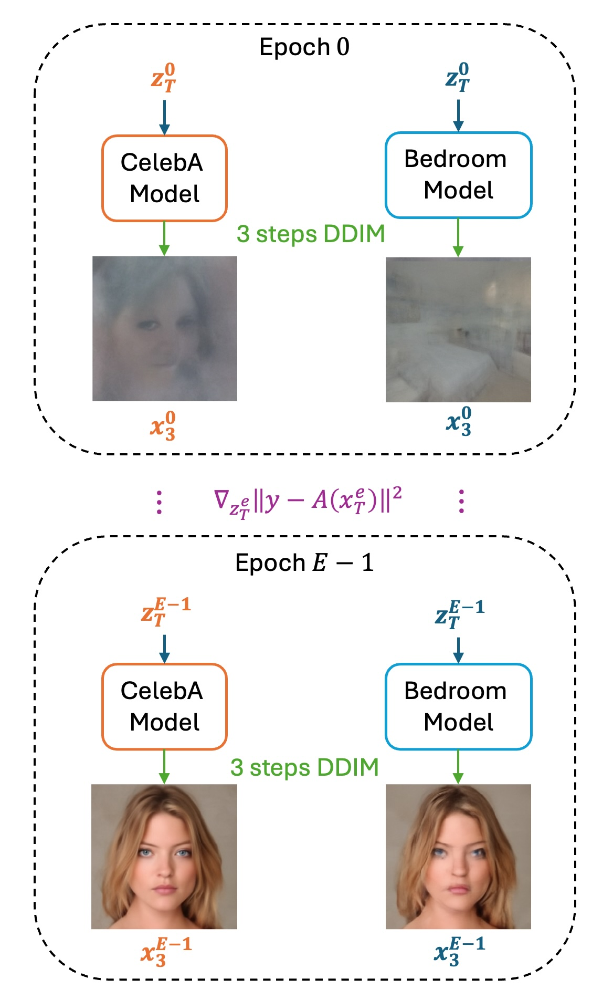

Can a diffusion model trained on bedrooms recover human faces? We investigate whether diffusion models trained on mismatched or otherwise degraded data — weak priors — can still be effective for solving inverse problems.
Surprisingly, the answer is often yes: across Gaussian deblurring, random inpainting, and super-resolution, we find that weak priors frequently perform nearly as well as full-strength, in-domain baselines. We identify the key condition: weak priors succeed when measurements are highly informative — for instance, when many pixels are observed or the blurring kernel is mild.
To explain this, we develop theory grounded in Bayesian consistency: when the measurement operator is sufficiently informative, the posterior concentrates near the true signal regardless of prior quality, effectively overwhelming a misspecified prior. Our results provide a principled account of when weak diffusion priors can be trusted, and clarify the regimes — such as high-ratio inpainting or aggressive super-resolution — where prior quality becomes critical.

Figure 1. Posterior concentrates around x⋆ as N grows.

Figure 2. Optimization algorithm using 3-step & mismatch weak prior.
As the measurement operator becomes more informative, the posterior distribution concentrates around the true signal (x*), even when the assumed prior is mismatched. With sufficient measurements (N=50), different priors yield highly concentrated posteriors near the ground truth, whereas weaker measurements (N=10) produce broader posteriors that remain more sensitive to the prior.
To realize the prior-robust behavior predicted by our theory, we optimize the diffusion initial noise using a stabilized optimization procedure together with an improved early-stopping criterion. We intentionally use weak priors in two forms: (1) an in-distribution but low-quality prior, and (2) a significantly weaker out-of-distribution prior, where the unconditional sample resembles only a coarse bedroom sketch. Despite the severe mismatch, both optimization trajectories can rapidly adapt to the measurements and converge to visually similar and accurate reconstructions. As shown in the cover image, intermediate reconstructions at optimization iterations 1, 5, 10, 100, and 1000 demonstrate the progressive correction of the weak priors toward the final solution.
Reconstructions on LSUN Bedroom, LSUN Church, and CelebA-HQ using a weak (mismatched-domain) prior. Weak priors perform competitively with in-domain baselines in this high-information regime.
When the observed pixel fraction is large, the weak prior is driven toward the correct reconstruction across all three datasets.
Side-by-side comparison of our method and DPS operating in the latent space, for Gaussian deblurring and inpainting for DiT images. Scroll to view both tasks.
When measurements are insufficiently informative, the prior plays a larger role and domain mismatch leads to visible degradation.
Takeaway. These cases are consistent with our theory: high-ratio inpainting (60% pixels missing) and 16× super-resolution are low-information regimes where the posterior no longer concentrates near the true signal, making prior quality critical. In these settings, an in-domain prior should be preferred.
@article{jia2026weak,
title = {Weak Diffusion Priors Can Still Achieve Strong Inverse-Problem Performance},
author = {Jia, Jing and Yuan, Wei and Liu, Sifan and Shen, Liyue and Wang, Guanyang},
journal = {arXiv preprint arXiv:2601.22443},
year = {2026}
}